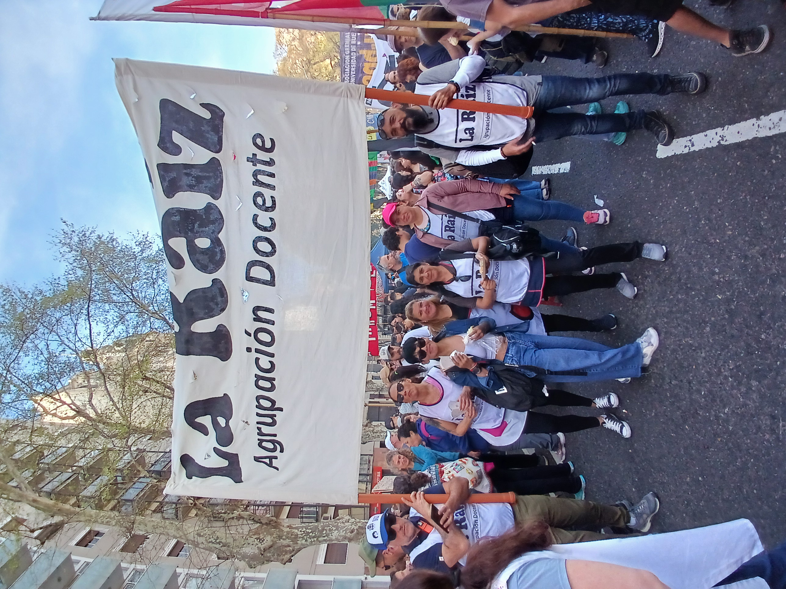

📸 Referencia de Siluetas Humanas
Imagen original para extraer estilo y proporciones realistas:

Imagen: Personas sosteniendo cañas - Estilo y postura natural
🔍 Análisis de la Imagen
Características clave observadas en la fotografía:
Postura Natural:
- Cuerpos ligeramente inclinados hacia adelante
- Piernas en posición de apoyo natural
- Brazos extendidos pero no rígidos
Proporciones Reales:
- Cabeza proporcional al cuerpo (1:7.5 aprox)
- Hombros más anchos que cadera
- Articulaciones visibles y naturales
Detalles de Ropa:
- Siluetas no uniformes - ropa cae naturalmente
- Pliegues y sombras suaves
- Formas irregulares pero orgánicas
Posición de las Cañas:
- Ángulos naturales de agarre
- Distancia entre las manos variada
- Cañas siguen línea natural del brazo
🎨 Vista Previa SVG Basada en la Imagen
Siluetas adaptadas del estilo de la fotografía:
💡 Notas de Implementación:
- Proporciones mejoradas: Cabeza 1:7.5 del cuerpo total
- Postura natural: Cuerpos ligeramente inclinados, no rígidos
- Ropa realista: Formas irregulares que siguen la gravedad
- Articulaciones visibles: Rodillas, codos, tobillos marcados
- Gradientes suaves: Transiciones naturales de luz y sombra